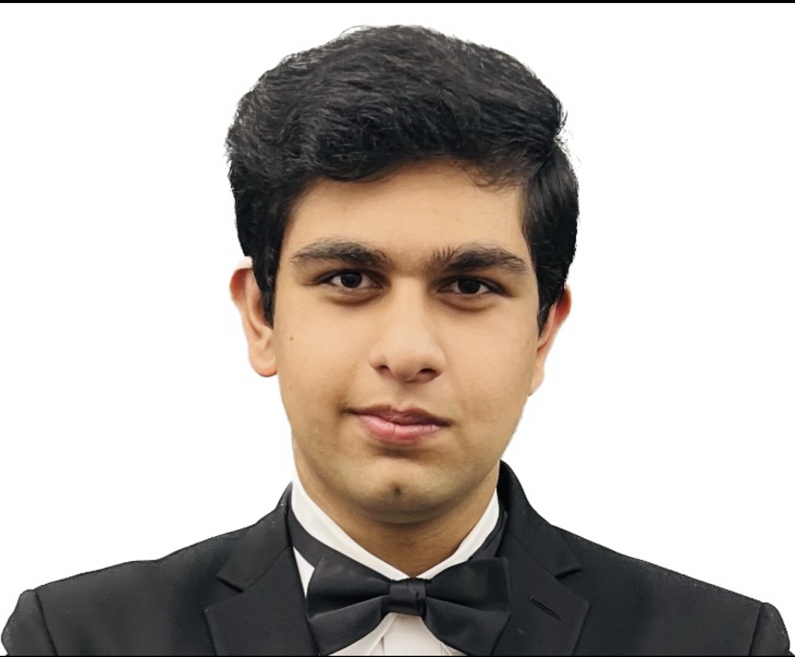
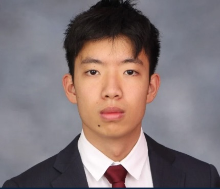
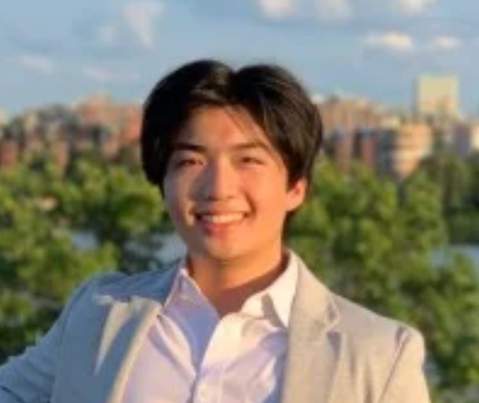
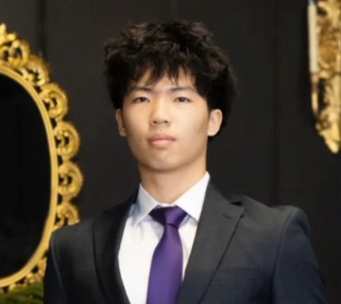

01 / CLINICAL NEED
Start with the problem.
Focus development on a meaningful challenge in the operating room.
We bring engineering and clinical perspectives together to develop intelligent tools for the moments that matter in surgery.
What if the instrument already in a surgeon’s hand could help them understand more of what is happening around it?
That question drives Argys. We are a medtech company developing intelligent, hand-operated surgical tools, beginning with Doppler-enabled suction for neurosurgery.
Our ambition is to improve safety and workflow in complex procedures. Our work today is about building the evidence, engineering and clinical understanding needed to pursue that ambition.
Focus development on a meaningful challenge in the operating room.
Build around the skills, judgment and familiar actions of the surgeon.
Evaluate concepts against the realities of the environment where they must work.
Biomedical engineering, medicine, mechanical design and software—working together from the beginning.

Brings biomedical engineering, electrical systems and clinical data science experience to the team.
LinkedIn
Brings mechanical engineering and design experience, with a computer science background, to instrument development.
LinkedIn
MD-PhD student at the University of Virginia with a B.S. in biomedical engineering from Georgia Tech.
LinkedIn
Brings biomedical engineering training, cerebrovascular research and endovascular device-design experience.
LinkedInA computer science graduate contributing software and systems architecture to the development of intelligent surgical tools.
Neurosurgical experience helps shape the questions we ask and the problems we choose to solve.
Neurosurgeon and Assistant Professor of Clinical Neurosurgery, with clinical interests including cerebrovascular, endovascular and brain tumor surgery.
Professional profileNeurosurgeon at Houston Methodist Sugar Land Hospital with training in neurosurgery and orthopedic spine surgery.
Professional backgroundInstitutional affiliations identify professional backgrounds and do not imply institutional endorsement of Argys or its technology.
Argys is also pursuing early strategic engagement with a Fortune 500 medical technology company as it progresses from concept toward validation.